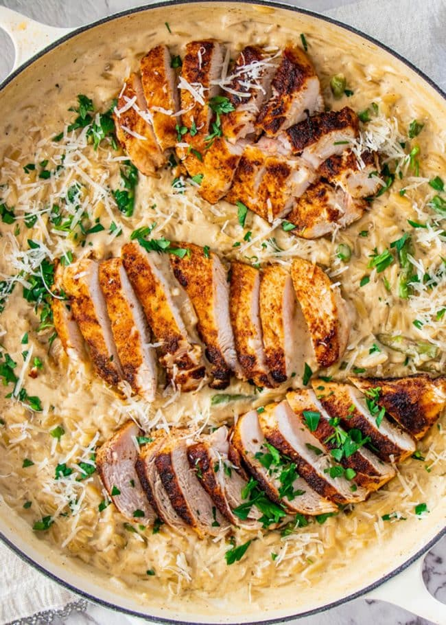

Chicken and Aspargus Orzo

This creamy, cheesy, Parmesan orzo is my kind of dish and the kind of dish I could have every single night for lunch or dinner.
What's not to like? You've got your proteins, your veggies, and my favorite part, the Parmesan orzo.
Ingredients
- 450g chicken breast
- 1/2 tsp salt
- 1/2 tsp pepper
- 1 tbsp paprika
- 2 tbsp olive oil
- handful of asparagus
- large onion
- 4 cloves garlic
- 300g orzo
- 480ml half and half
- 705ml chicken stock
- 150g parmesan
- 2 tbsp parsley
Steps
- Season the chicken breasts with salt, pepper and paprika on both sides.
- In a large skillet heat the 2 tbsp of olive oil over medium-high heat.
Sear the chicken for about 5 minutes per side, or until golden brown and
cooked through. Depending on the thickness of your chicken you might need
longer time. Transfer the chicken to a warm plate; set aside.
- In the same skillet add the asparagus and saute for about 3 minutes,
just until it starts to soften and starts to brown a bit. Transfer to a
plate; set aside.
- In the same skillet add the onion and garlic and saute for about 3 minutes
until the onion is translucent and the garlic becomes aromatic. Add more
olive oil if needed.
- Add the orzo to the skillet and saute for just one minute, to get it a
little toasted, this will give it a nutty flavor. Add the half and half,
chicken broth and stir.
- Bring to a boil, then turn the heat down to a medium-low, cover with lid
and let it cook for 10 minutes.
- Remove the lid and stir in the Parmesan cheese. Taste for seasoning and
adjust with salt and pepper.
- Add the asparagus back and stir it in. Slice the chicken into thin slices.
You can either add it to the skillet and stir it in, or as seen in the photos,
arrange over the orzo.
- Garnish with more Parmesan cheese if preferred, and parsley. Serve warm.